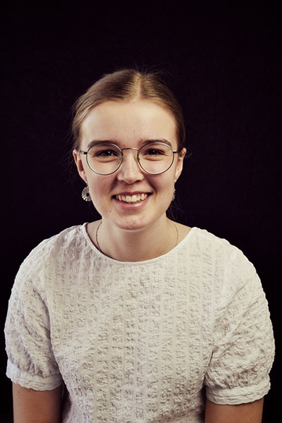

Lidt om mig
Mit navn er Camilla Frederiksen. Jeg er 22 år gammel og bor i Odense
Jeg læser til multimediedesigner på 1. semester. Jeg har gennem
hele min barndom og ungdom altid elsket at være kreativ
Jeg er typen der elsker de sjove detaljer og lidt skæve og skøre idéer.
Jeg arbejder inden for flere forskellige dele af multimediedesign,
hvor mit primære fokus er på grafisk design i form af logoer og magasiner.
Skills
Adobe Illustrator
Adobe Indesign
Adobe Photoshop
Illustration